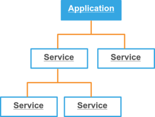

Application Services¶
Services are the foundation of the application architecture. A service is basically an object that provides some reusable functionality, like sending mails, storing data, rendering, etc. Services are the way that third-party libraries are plugged into the application also.
Services are powered by the Zend Framework 2 ServiceManager component and we decide that a best practice is to use only invokables and factories. Using a magic to resolve services dependencies via some DI container isn’t implemented, because with large projects it becomes messy and slow.
Core services¶
Core services are available even before application bootstrap, but the configuration is not fully initialized and write enabled. They are registered into the core section of the application configuration.
Invokables¶
An invokable service is a class that may be called like an ordinary function, or may not. It depends on its interface, but for a sake we call them all invokables, if they doesn’t have a constructor dependencies.
class MyInvokableService
{
public function __invoke()
{
}
public function someServiceMethod()
{
}
}
Adding and accessing an invokable service via application.
// lazy loading
$app->set(MyInvokableService::class);
/** @var MyInvokableService $service */
$service = $app->get(MyInvokableService::class);
Registering an invokable service via application config.
use WebinoAppLib\Application\CoreConfig;
use WebinoAppLib\Feature\InvokableService;
return new CoreConfig([
new Service(MyInvokableService::class), // <--
// or
new CoreService(MyInvokableService::class), // <--
]);
Service Factory¶
In case when we want to create a complex service with dependencies, it is required to create a factory.
use WebinoAppLib\Factory\AbstractFactory;
class MyServiceFactory extends AbstractFactory
{
protected function create()
{
return new MyService;
}
}
Adding and accessing a service created by factory via application.
// lazy loading
$app->set(MyService::class, MyServiceFactory::class);
/** @var MyService $service */
$service = $app->get(MyService::class);
Registering a service created by factory via application config.
use WebinoAppLib\Application\CoreConfig;
use WebinoAppLib\Feature\ServiceFactory;
return new CoreConfig([
new Service(MyService::class, MyServiceFactory::class), // <--
// or
new CoreService(MyService::class, MyServiceFactory::class), // <--
]);